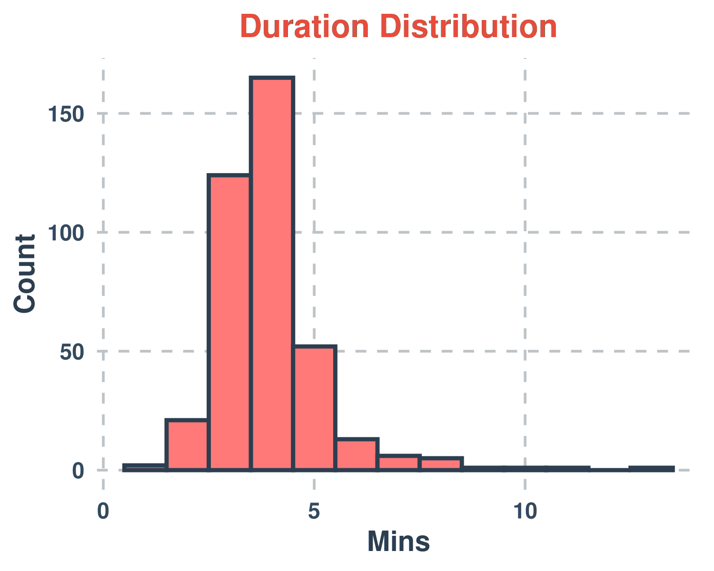
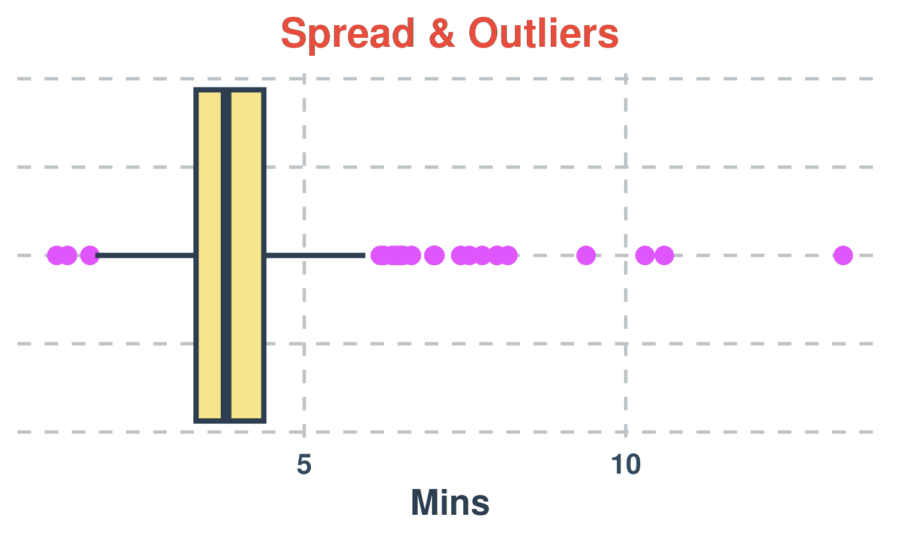
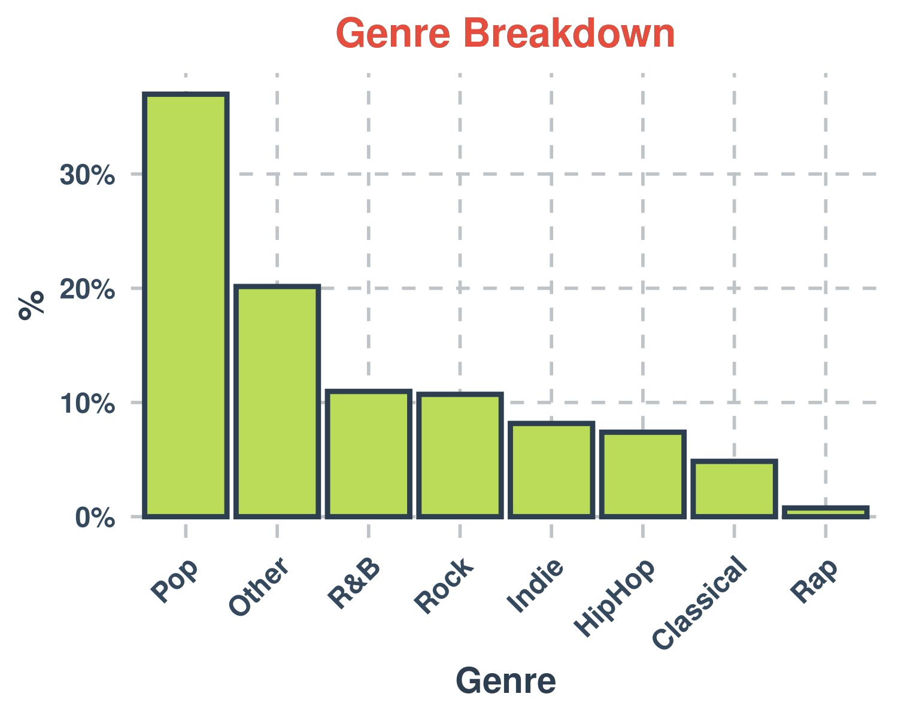
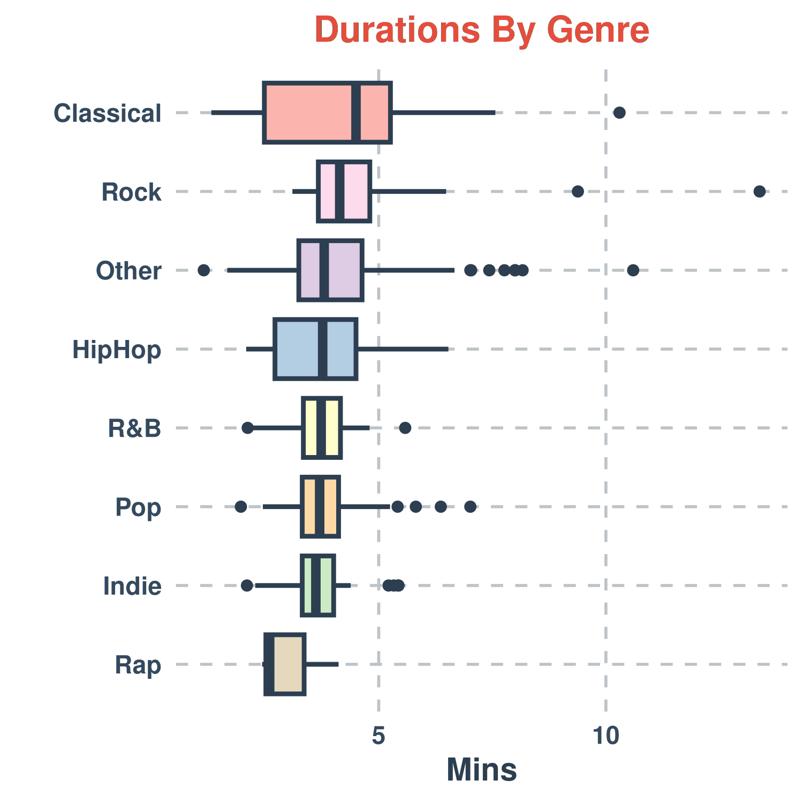

1. The histogram is right-skewed, centred around 4–5 minutes, with moderate spread and several high-end outliers.
2. The average song duration is 3.97 minutes. Song lengths typically deviate from this mean by about 1.26 minutes.
3. The Empirical Rule fails: observed song proportions within 1, 2, and 3 standard deviations miss 68-95-99.7%, confirming the right-skewed shape.

4. This right-skewed song duration boxplot centers at a 3.78-minute median with uneven whiskers. Spread (IQR) identifies both susceptible (>1.5×IQR) and highly susceptible (>3×IQR) outliers.

5. Pop heavily dominates as the most common song genre (37%), while Rap is the least common, showing highly uneven frequencies.

6. Most genre distributions are right-skewed. Classical and Rock have the highest medians and widest spread (IQRs), while Rap is lowest.